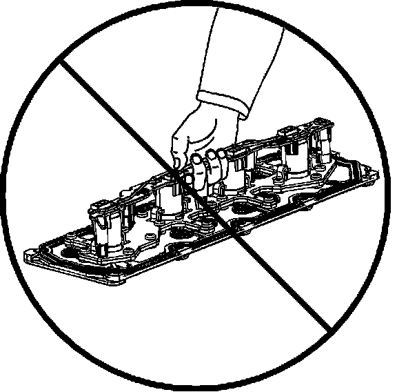
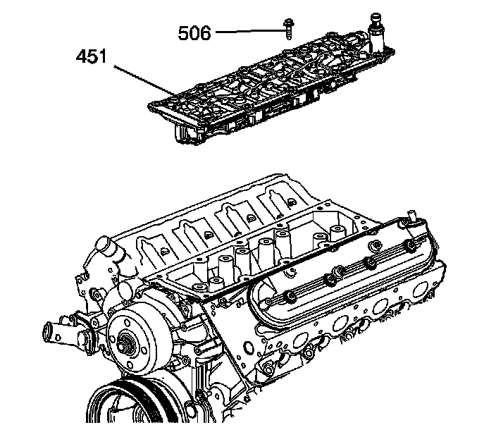
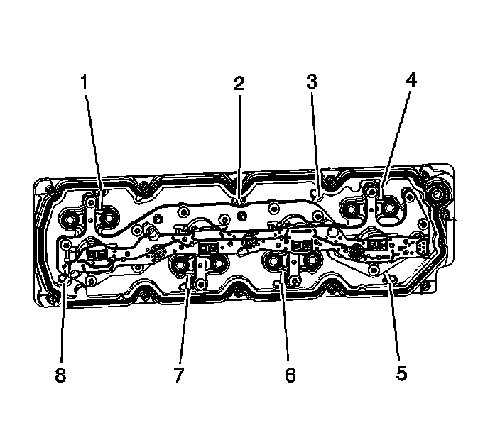
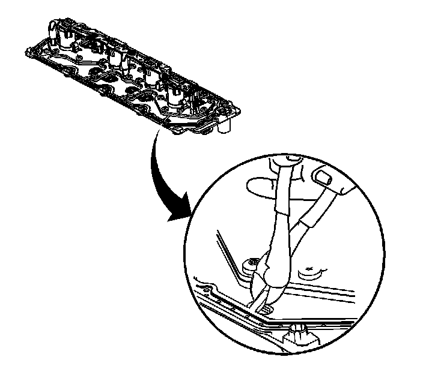
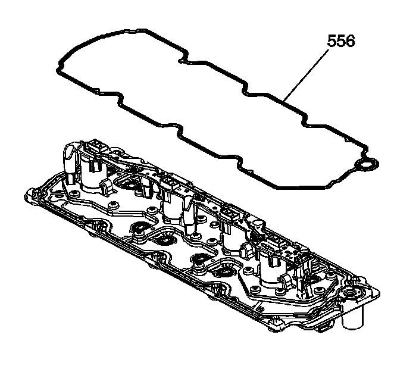

13. Valve Lifter Oil Manifold Removal
Valve Lifter Oil Manifold Removal

1. Do not lift the manifold by the electrical lead frame.

2. Remove the valve lifter oil manifold bolts (506).
Important: Do not allow dirt or debris to enter the oil passages of the manifold. Plug, as required.
3. Remove the valve lifter oil manifold (451).

Important: Remove only the outer gasket from the manifold. Do not disassemble any of the internal components of the manifold in an attempt to remove the 8 inner sealing gaskets. If the inner gaskets are cut or damaged, replace the manifold as an assembly. Only use a wire-cutter type tool in order to minimize the amount of debris. Do not use a rotary-type cutting tool on the retaining straps.
4. Identify the 8 gasket retaining strap locations (1-8).

5. Using a wire-cutter type tool, cut the 8 retaining straps.

6. Remove the outer gasket (556) from the manifold.